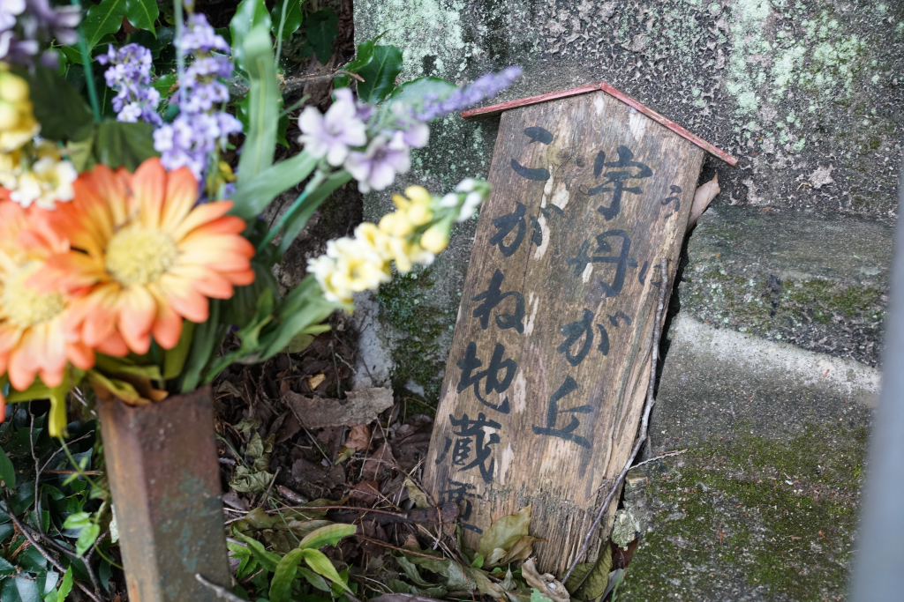
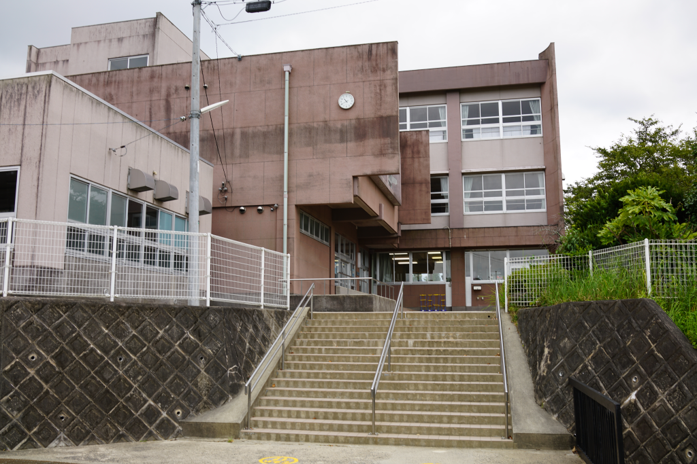
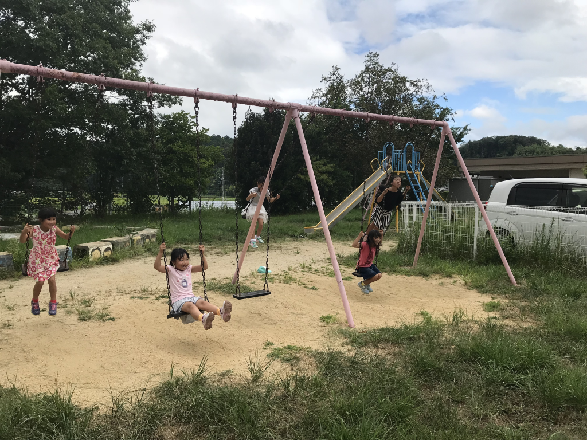
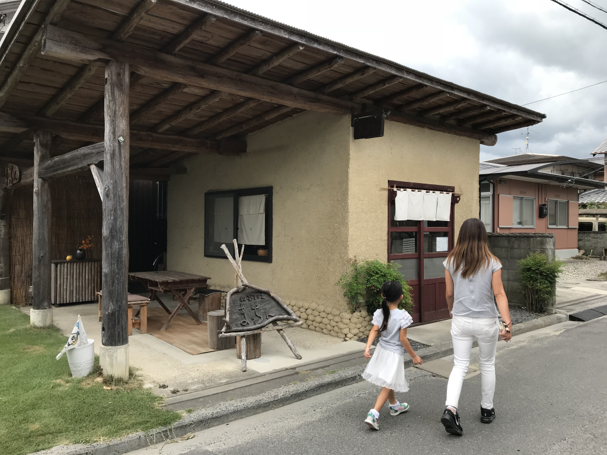
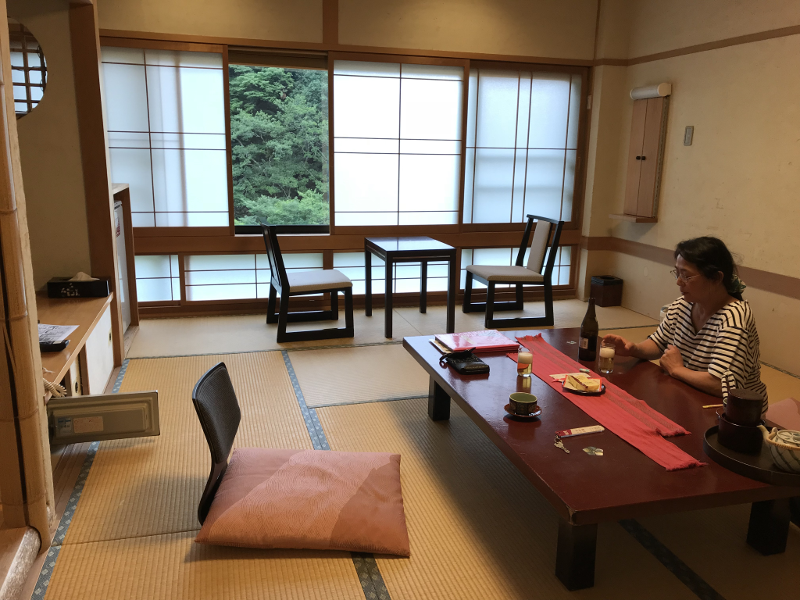
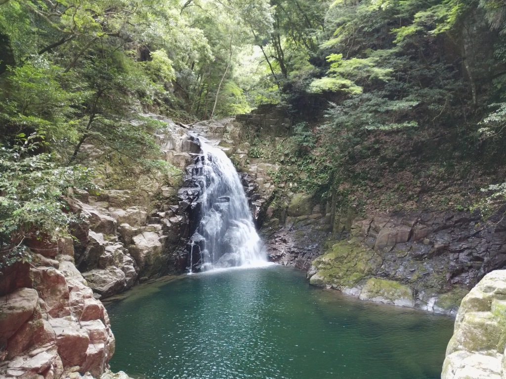
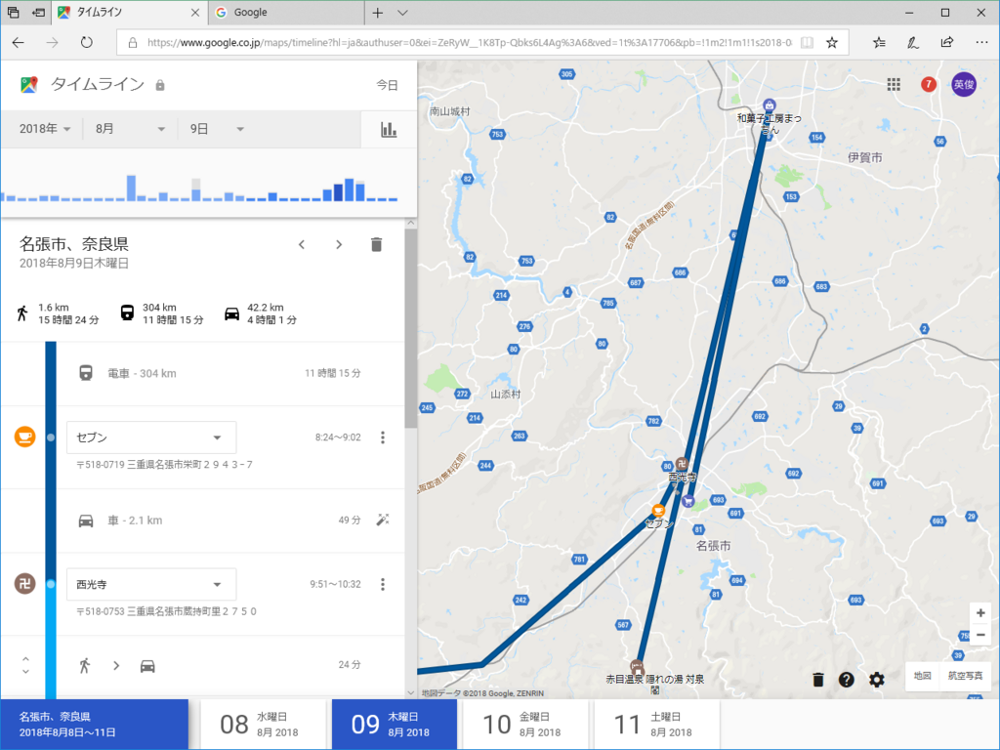

8月9日：墓参り、母校、赤目温泉・対泉閣
公開日：
9日早朝、フェリーで南港に到着。そのまま近鉄に乗って、名張へ墓参りに向かう。いつもは独りだけど、今回はおかんと妹夫婦も東京から来るとの由。妹夫婦が対泉閣に宿をとったというので、自分もおかんの分と一緒に同じところを予約した。たまにはビジネスホテル以外もいいものだ。
生憎の曇り空だったけど、連日の酷暑を思えば、むしろ僥倖。人手が多いのもあり、墓の掃除は一瞬で終わった。父か弟か、春先に墓参りをしてくれていたようで、雑草があまりなかったのも助かった。朝早くきすぎたせいで店が開いておらず、供花できなかったのはちょっと残念だけど、まぁ、くることが大事ってことで。

そのあとは、妹がやたらとせがむので、少しだけ昔の通学路を散歩した。蔵持町里から緑が丘に抜ける道は急峻で、よくもまぁ、小学生のくせに毎日この道を走り回っていたものだと感心する。妹が義弟・姪・甥そっちのけで「あそこが変わった、ここはそのまま」などとはしゃぐ一方、母などは完全にへばって、「一人だけ待っていたい」とかぬかしはじめる。自分はというと、何年か前に探検を済ませていたので（！）、とくに感じ入るところもない。息絶え絶えで遅れがちな母、妻のテンションについていけてない義弟、今にも転びそうな勢いで走り回る子どもたちに目を配りながら、のんびりと散歩を楽しんだ。
ちなみにこの辺りは古くは「宇丹（うに、雲丹）が丘」といったらしい。「うに」とは伊賀の古い言葉で、泥炭・石炭のこと。松尾芭蕉が「伊賀の城下にうにと言うものあり。悪臭（わるくさ）き香なり」として、「香に匂へうに掘る岡の梅の花（かににほへうにほるおかのうめのはな）」という句を詠んでいて、それが蔵持小学校の校歌に取り入れられている。

その蔵持小学校にも顔を出してみた。僕が小学校4年から、妹は隣にある保育所からそのまま上がって、この小学校に通っていた。おそらく創立120年にはなる古い学校で、田舎の学校の割には校庭が狭い（サッカーコート1面半がとれる程度）。耐震補強なのだろうか、ところどころに武骨な H 鋼が斜にかかっている以外は卒業時とほぼ変わらない。妹が卒業制作でつくった日時計もそのまま残っていたようで、大変ご満悦だった。

併設の保育所との間にある庭は、駐車場の拡張で少し狭くなっていたが、ブランコや滑り台ができていた。自分のころは大きな藤棚があって、その上に秘密基地――の割には、丸見えなのだが――を作ったりしていた。その藤棚も少し残っていたようだがあまり元気は感じられず、自分が遊んだ頃よりずいぶん背が低くなったように感じる。自分の背が伸びたからなのか、藤棚がおばあさんになってしまったからなのか。
たまたま学童保育で遊びにきたのだという低学年の子たちは屈託がなくて、甥・姪ともすぐに打ち解けてくれた。妹が先輩面をして今の学校の様子を聞き出しているのがおかしくて仕方ない。

そのあとは、伊賀牛・奥田で焼き肉を食べた。お酒があまり強くない（わりにピッチの早いｗ）義弟はここでダウン。ブレーキ役がいなくなったことをいいことに、妹は伊賀上野までわらび餅を買いに行くと言い出す。自分も知らなかったが、この「まっちん」というお店は手作りの和菓子で少しは知られているらしい。わらび餅は翌日いただいたけれど、確かにスーパーに売っているものなんかよりはずっと美味しかった。

3時前、対泉閣にチェックイン。JTB のパックで安く（15,000円/人ぐらい）とった割には結構いいお部屋だった。ここでおかんが財布を亡くしたと騒ぎだして1時間ほど無駄にするが、彼女の名誉のために深くは記さない。

そのあとは露天風呂に入ったり、売店で酒を飲むなどしながら近所を散歩したり。オオサンショウウオセンターにたどりついたころはすでに戸締りが始まっていた。窓口の方のご厚意で、不動滝までならばタダで入っていいよとのこと。おかげで有名な赤目四十八滝も少しだけみることができた。
渓流に入ると明らかに空気が湿り気を帯びて、重く、気温も数度は低くなる。肌をなめる風が体にこもった熱気を奪い、大変気持ちいい。昔、一度だけ奥まで行ったけれど、秋ごろに行くと大変よい。
対泉閣は夕ご飯も朝ご飯も美味しかった（アユの揚げ物って初めて食べたかもしれない？）。これで部屋食できたら最高だな……小さい頃、一度泊まったときはそれほどにも感じなかったのだけど、子どもゆえにありがたみを感じられていなかったのか、その後の経営努力なのか。一人のときでも、またふらっと泊まりに行ってもいいなぁと思った。

追伸
それはそうとこの前、蔵持小学校の Wikipedia ページを作成したのですよ。Wikipedia でページを一から作ったのは初めての経験だけど、なるほど、書きたいことをそぎ落とし、書くべきことだけをまとめるのはなかなか難しいものだと感じた。小学校のころ、図書委員をしていて創立100周年記念かなにかで製作された校史を読んだことがある。その記憶をたどりながら、しかしそれはなるべく使わず、ネットに転がっていた教育委員会の断片的な資料から事実関係を制作して製作している。間違ってたら自分のコピペミスか、名張市教育委員会の資料のせいだ。